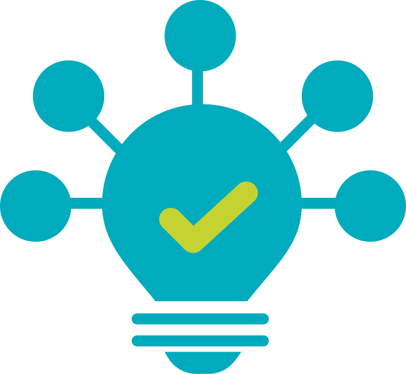
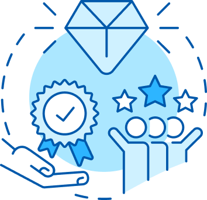

Linha de crédito orientada para negócios de impacto.
Apoio financeiro e capacitação para empreendimentos que promovam impacto socio-ambiental.
Uma iniciativa da Agência de Desenvolvimento do Estado do Ceará (Adece), voltada ao apoio a negócios de impacto empreendidos por microempresas e Organizações da Sociedade Cívil (OSC), que desenvolvam soluções sociais e ambientais, com viabilidades econômicas.
Apoio financeiro e capacitação para empreendimentos que promovam impacto socio-ambiental.


Estimular a geração e fortalecimento de negócios de impacto social e organizações com alto potencial de transfromação social e impacto ambiental.
Fortalecer a gestão econômico-financeira dos empreendimentos de impacto.
Apoiar soluções inovadoras para desafios sociais e ambientais.
Após finalizar o cadastro, responda ao diagnóstico para identificar o potencial de impacto social e ambiental do seu empreendimento.
REALIZAR TESTE